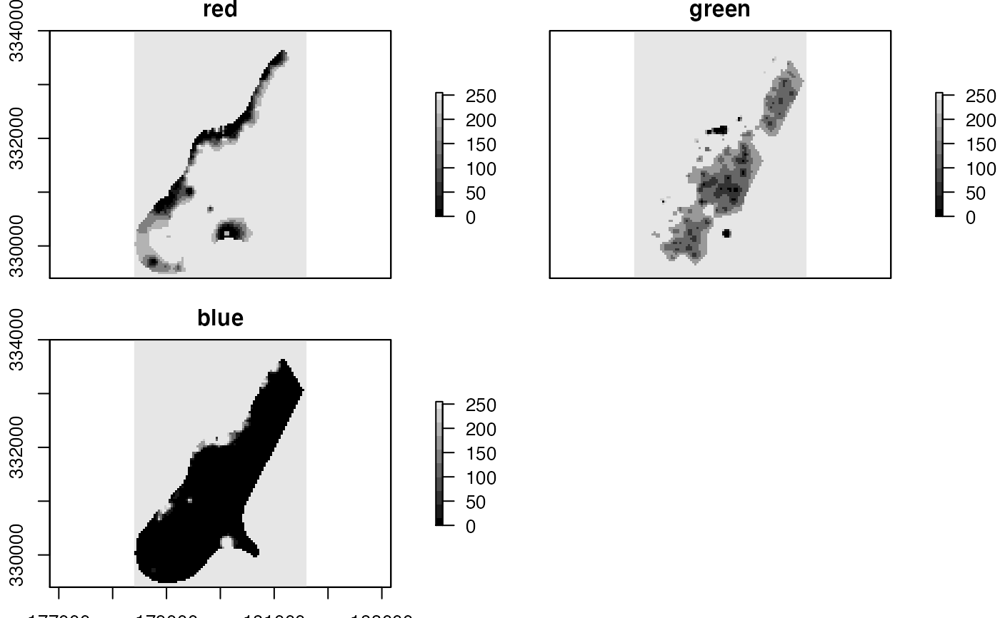
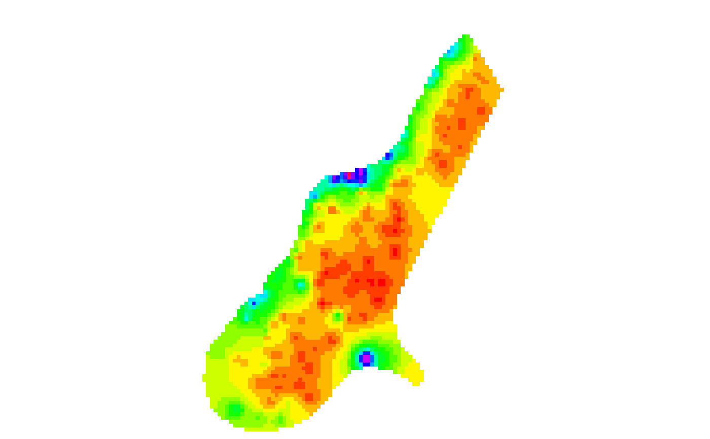

RGB.RdMake a Red-Green-Blue object that can be used to create images.
# S4 method for RasterLayer RGB(x, filename='', col=rainbow(25), breaks=NULL, alpha=FALSE, colNA='white', zlim=NULL, zlimcol=NULL, ext=NULL, ...)
| x | RasterLayer |
|---|---|
| filename | character. Output filename (optional) |
| col | A color palette, that is a vector of n contiguous colors generated by functions like rainbow, heat.colors, topo.colors, bpy.colors or one or your own making, perhaps using |
| breaks | numeric. A set of finite numeric breakpoints for the colours: must have one more breakpoint than colour and be in increasing order |
| alpha | If |
| colNA | color for the background ( |
| zlim | vector of lenght 2. Range of values to plot |
| zlimcol | If |
| ext | An |
| ... | additional arguments as for |
RasterBrick
r <- raster(system.file("external/test.grd", package="raster")) x <- RGB(r) plot(x, col=gray(0:9/10))